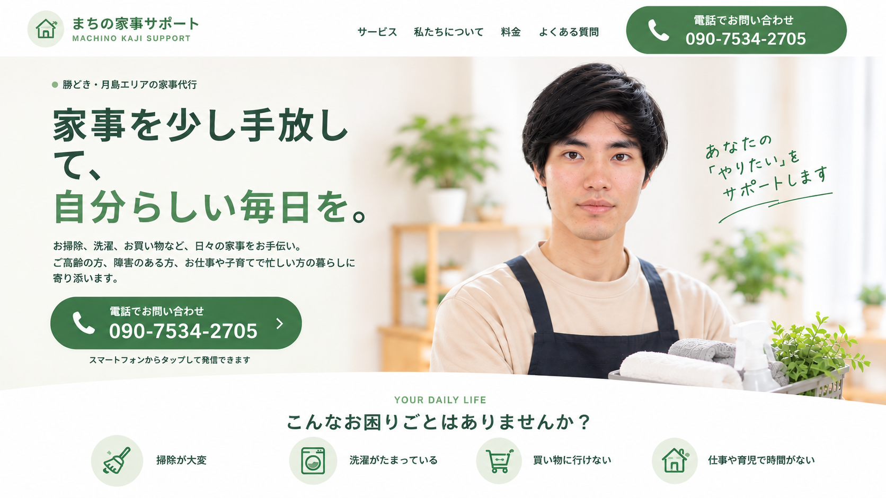

ご高齢の方
掃除や洗濯、買い物など、体力を使う家事が負担になってきた。
お掃除、洗濯、お買い物など、日々の家事をお手伝い。ご高齢の方、障害のある方、お仕事や子育てで忙しい方の暮らしに寄り添います。
毎日の「ちょっと大変」を、ひとりで抱え込まなくて大丈夫です。
掃除や洗濯、買い物など、体力を使う家事が負担になってきた。
自分の生活スタイルに合わせて、日常の家事を手伝ってほしい。
仕事で帰りが遅く、家事をする時間や気力が足りない。
育児や仕事に追われ、家のことまで手が回らない。
ご希望を伺いながら、必要な家事を組み合わせてサポートします。

リビング、キッチン、浴室、トイレなど、日常的なお掃除。

洗濯、干す作業、取り込み、たたみ、収納のお手伝い。

ご家庭での簡単な調理や、日々のお食事づくり。

食料品や日用品など、日常のお買い物代行。
※対応できる作業内容は、ご依頼内容や安全面などを確認のうえ、事前にご相談させていただきます。

私たちが目指すのは、家事を代わりに行うだけではなく、お客様がご自宅で心地よく過ごせる毎日を支えることです。
まずはご相談だけでも、お気軽にお問い合わせください。
お電話で、ご希望やお困りごとをお聞かせください。
訪問エリア、作業内容、日時、料金などを確認します。
内容にご納得いただいたうえで、訪問・作業を開始します。
ご依頼内容や利用頻度に応じて、事前にお見積もりをご案内します。
現在、正式な料金・最低利用時間・交通費などを設定中です。お問い合わせ時に、ご希望の内容を伺い、事前に費用をご説明します。
※このページの料金欄は公開前の仮表示です。正式な料金体系が決まったら必ず更新してください。
まずは勝どき・月島エリアを中心に対応予定です。周辺地域についてはお問い合わせください。
スポット利用の可否や予約状況について、個別にご相談ください。
ご希望や必要な配慮を事前にお聞きします。対応可能な範囲を確認し、難しい場合はその旨も丁寧にお伝えします。
このサービスは家事代行を想定しています。身体介助、医療行為、介護保険・障害福祉サービスに該当する支援は、提供資格・体制等を確認したうえで、対応可否を明確にご案内します。
「こんなことを頼める？」「料金だけ知りたい」など、まだ依頼を決めていなくても大丈夫です。